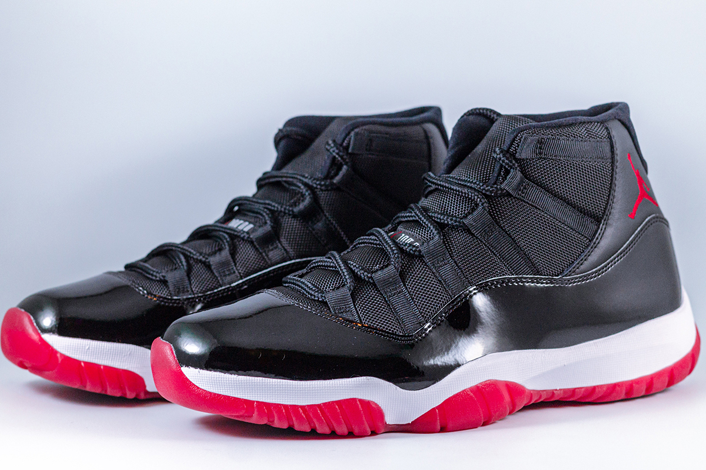
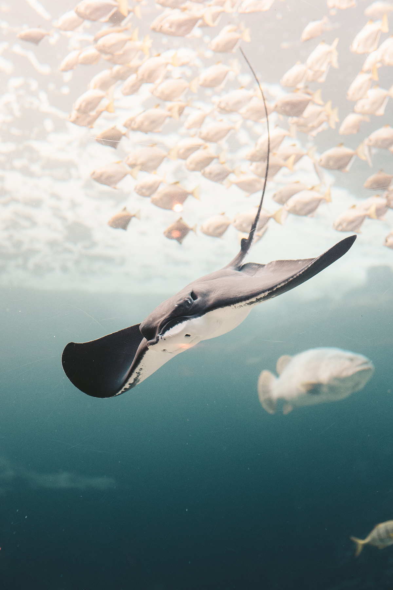

에어 조던 11은 올타임 클래식입니다.
마이클 조던은 이 신발을 신고 72승을 거두며 타이틀을 차지했죠.
이제 그 아이콘이 돌아옵니다.
매끄러운 에나멜가죽 머드가드와 성에가 서린 듯 불투명한 밑창이 적용된 팅커 햇필드의 디자인으로 코트 밖에서도 매력적인 스타일을 연출합니다.
마지막으로, 밑창 전체에 나이키 에어 쿠셔닝을 적용해 완벽하게 마무리했죠.
미얀마 양곤에 있는 높이 112.17 m (7.17미터 정도인 첨탑까지 포함)인 황금 탑. 미얀마 전체의 랜드마크이자 미얀마 불교도들의 정신적 지주.
이름의 쉐는 황금, 다곤은 언덕이라는 뜻이다.

매가오리목, 쥐가오리과에 속하는 바다 어류의 일종이다.
현존하는 가오리들 중 가장 거대한 종으로, 큰 개체는 고래에 맞먹게 크다.
영어로는 흔히 Manta ray로 불린다.
근연종으로는 암초대왕쥐가오리(Reef manta ray, M. alfredi)가 있다.